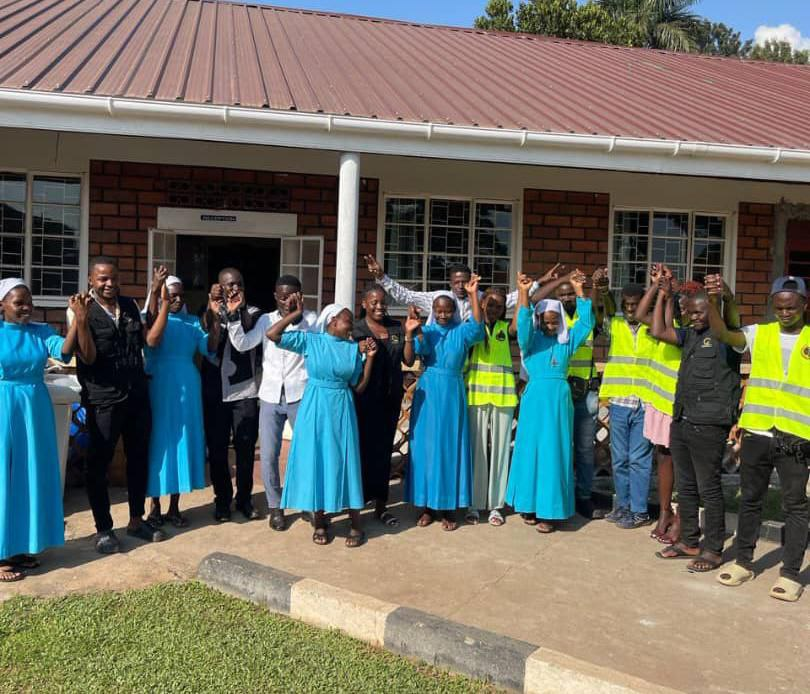

A small donation can be a life changing moment for someone Donate to change someones life
A VISIT TO GOOD SAMARITAN SISTERS - NALUKOLONGO
Spreading Hope and Kindness

At Walda Children Foundation,
Our mission has always been to uplift communities
and support the most vulnerable among us.
Recently, we had the privilege of visiting
Good Samaritan Sisters, a place dedicated to caring for individuals with disabilities
and special needs.
This experience was not only humbling but also a reminder of the power of
compassion and generosity.
A Place of Care and Love
Good Samaritan Sisters is more than just a shelter; it is a sanctuary where people with disabilities and special needs receive the care, support, and attention they deserve. The dedication of the caregivers and the resilience of the residents touched our hearts and reinforced our commitment to humanitarian work.
During our visit, we provided essential relief materials, including:
Touching Lives, One Visit at a Time
Beyond material support, we also spent time visiting the sick and disabled individuals, offering words of encouragement and prayers. The joy and gratitude on their faces reminded us of the significance of simply being present and showing care.
A Call to Action
Our visit to Good Samaritan Sisters was an eye-opening experience, emphasizing
the importance of collective responsibility. We invite everyone to join us in
spreading kindness—whether through donations, volunteering, or simply offering
a helping hand.
Together, we can make a difference! üåçüíô

Fed and brought relief for the children of walakira children’s relief camp

At Walda Children Foundation,
we believe in the power of compassion and collective action.
Recently, we had the honor of visiting Walakira Children’s Relief Camp, a place dedicated
to sheltering and caring for vulnerable children. Our visit was a humbling experience,
reminding us of the importance of supporting the most vulnerable members of our society.
Providing Relief and Comfort
During our visit, we provided much-needed relief materials, including:
Beyond material support, we also spent quality time with the children, engaging in conversations, playing games, and sharing moments of joy. Seeing their smiles and hearing their laughter was a touching reminder of the power of human connection and kindness.
A Celebratory Feast
As part of our visit, we also organized a special celebratory meal.
We slaughtered a goat and prepared a delicious feast, ensuring that everyone,
including the children and caregivers, could enjoy a nutritious and satisfying
meal together.
The event was filled with laughter, storytelling, and shared
happiness, making it a truly memorable experience for all.
A Call to Action
Our experience at Walakira Children’s Relief Camp reinforced our belief that small
acts of kindness can create lasting change. We encourage everyone to join us in
making a difference—through donations, volunteering, or simply spreading awareness.
Together, we can uplift lives and bring hope to those who need it most. üåçüíô


Walda Children Foundation IS AN ORGANIZATION AIMED AT HELPING AND PROMOTING CHILDREN AROUND THE WORLD

HELP US
DONATE NOW
@copyright all rights reserved Waldachildrenfoundation.com
powered by SCEC Technologies